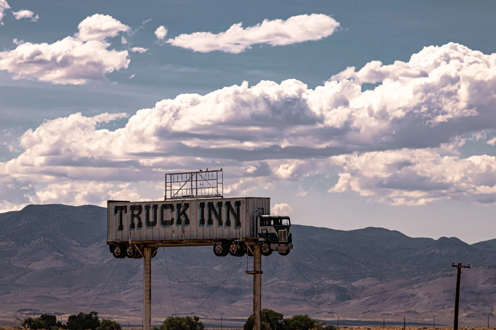
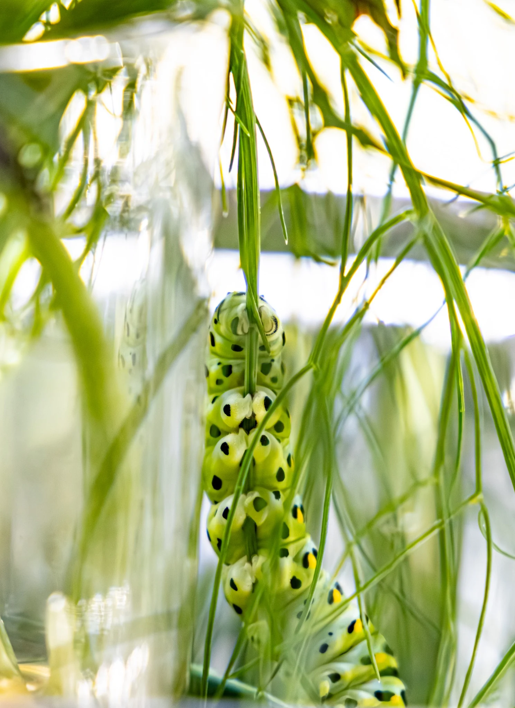
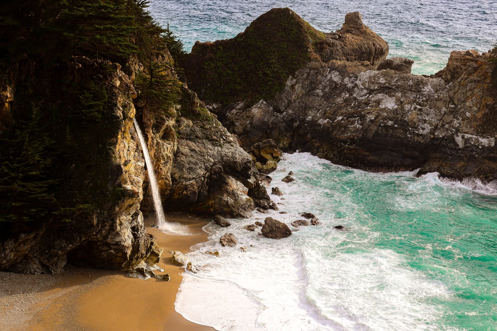
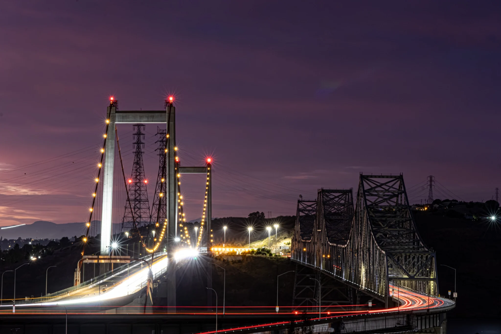

Field note
Morning Fog
The bridge was familiar, but the fog changed its character completely. Steel, light, traffic, and morning weather briefly became one quiet scene. This is why returning matters: the same place is never exactly the same place twice.

Field note
The Truck Inn
On a road trip through Nevada, an entire semi-truck appeared high above the roadside as an inn sign. The scale of the effort was absurd, charming, and impossible not to admire. Curiosity made us slow down; the photograph followed.

Field note
Mr. Poo
A caterpillar arrived accidentally on dill from a friend’s garden and lived in the window for a while. He earned his name through constant little pellets and daily cleanup. Eventually he needed more space, so I released him—hopefully toward a future as a swallowtail butterfly.

Field note
Where Water Meets Water
A waterfall reaches the Pacific in a protected cove. The scene feels improbable until you stand there long enough to hear both waters at once.

Field note
A Window in Time
Long exposure photography asks for stillness. While the camera remains fixed, moving headlights become visible paths, turning ordinary traffic into a record of time passing.

Field note
The Oaks
California oaks feel almost fairytale-like. They were here before the nearby homes and roads, and they carry their years physically—in broken limbs, worn bark, and asymmetrical silhouettes. We cannot hear their histories, but we can observe them.